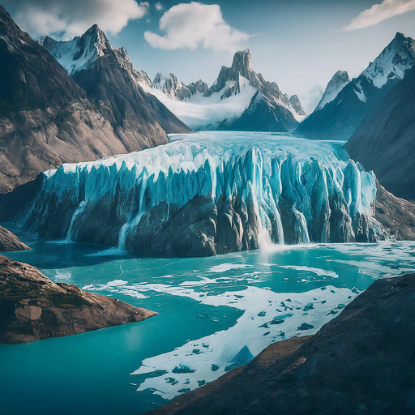
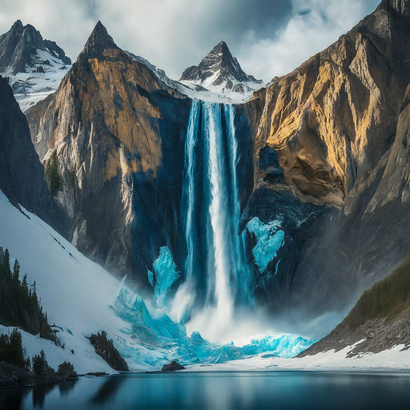
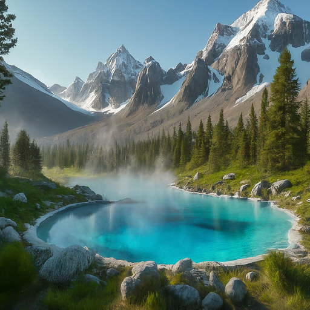

Breathtaking Landscapes
-

-
Majestic Glaciers
Witness the awe-inspiring beauty of towering glaciers and crystal-clear ice formations.

-
Thundering Waterfalls
Feel the power and serenity of cascading waterfalls amidst breathtaking landscapes.

-
Rejuvenating Hot Springs
Relax and soak in the natural warmth of geothermal springs surrounded by stunning scenery.
Embrace the Waterbending Way
Learn the art of waterbending from skilled masters and connect with the spirit of the ocean.
- Master basic waterbending techniques.
- Connect with the flow and rhythm of the water.
- Experience the thrill of surfing and other water activities.
Immerse Yourself in Rich Traditions
Discover ancient customs, vibrant festivals, and a deep respect for the natural world.
- Witness traditional water dances and storytelling.
- Savor the unique flavors of Water Tribe cuisine.
- Learn about the Water Tribe's philosophy of harmony and balance.